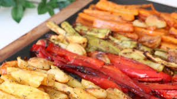

Fırında Sebze Kızartma Tarifi

Fırında Sebze Kızartma Tarifi İçin Malzemeler
- 2-3 adet patates
- 2 havuç
- Yarım karnabahar
- Yarım brokoli
- Zeytinyağı
- Tuz, kırmızı toz biber, zerdeçal
- Sarımsaklı yoğurt
Fırında Sebze Kızartma Tarifi Nasıl Yapılır?
- Önce patates ve havuçlardan başlayalım. Soyup dilimleyelim ve büyük bir kapta zeytinyağı ve baharatlarla harmanlayalım. Yağlı kağıt serili tepsiye yayalım 200 derece fırında 15 dk pişirelim.
- Karnabaharı çiçeklerine ayıralım ve patatesleri sosladığımız kaba alalım. Gerekiyorsa tekrar yağ ekleyelim baharatlardan da ekleyip harmanlayalım.
- 15 dakika pişen patates ve havuçların üzerine karnabaharları da ekleyelim 10 dakika da öyle pişirelim. En son brokoliyi ekleyeceğiz, brokoli hızlı pişip yanmaya dönüyor bu yüzden en son ekleyeceğiz.
- Çiçeklerine ayırdığımız brokoliyi de aynı kapta zeytinyağı ve baharatlarla harmanlayalım ve fırından çıkardığımız tepsiye ekleyelim. Brokoliler de pişince tepsiyi fırından çıkaralım.
- İlk sıcaklığı geçince servis tabağına yoğurt koyup üzerine sebzeleri ekleyelim. Hepsi çok güzel pişmiş oluyor ve aromaları birbirine karıştığı için gerçekten çok lezzetli oluyor. Denemenizi tavsiye ederim afiyet olsun :)